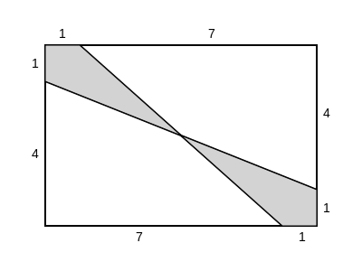

Let's play with Latex (via Mathjax) and SVG!
\[ x = \frac{-b \pm \sqrt{b^2 - 4ac}}{2a} \]What is the value of \( \dfrac{11!-10!}{9!} \)?
(A) 99 (B) 100 (C) 110 (D) 121 (E) 132
For what value \(x\) does \(10^x \cdot 100^{2x} = 1000^5\)?
(A) 1 (B) 2 (C) 3 (D) 4 (E) 5
For every dollar Ben spent on bagels, David spent 25 cents less. Ben paid $12.50 more than David. How much did they spend in the bagel store together?
(A) $37.50 (B) $50.00 (C) $87.50 (D) $90.00 (E) $92.50
The remainder can be defined for all real numbers \(x\) and \(y\) with \(y \neq 0\) by \[\text{rem} (x ,y)=x-y\left \lfloor \frac{x}{y} \right \rfloor\] where \(\left \lfloor \dfrac{x}{y} \right \rfloor\) denotes the greatest integer less than or equal to \(\dfrac{x}{y}\). What is the value of \(\text{rem}\left(\dfrac{3}{8}, -\dfrac{2}{5}\right)\)?
(A) \(-\dfrac{3}{8}\) (B) \(-\dfrac{1}{40}\) (C) \(0\) (D) \(\dfrac{3}{8}\) (E) \(\dfrac{31}{40}\)
A rectangular box has integer side lengths in the ratio \(1: 3: 4\). Which of the following could be the volume of the box?
(A) 48 (B) 56 (C) 64 (D) 96 (E) 144
Ximena lists the whole numbers 1 through 30 once. Emilio copies Ximena's numbers, replacing each occurrence of the digit 2 by the digit 1. Ximena adds her numbers and Emilio adds his numbers. How much larger is Ximena's sum than Emilio's?
(A) 13 (B) 26 (C) 102 (D) 103 (E) 110
The mean, median, and mode of the 7 data values 60, 100, \(x\), 40, 50, 200, 90 are all equal to \(x\). What is the value of \(x\)?
(A) 50 (B) 60 (C) 75 (D) 90 (E) 100
Trickster Rabbit agrees with Foolish Fox to double Fox's money every time Fox crosses the bridge by Rabbit's house, as long as Fox pays 40 coins in toll to Rabbit after each crossing. The payment is made after the doubling, Fox is excited about his good fortune until he discovers that all his money is gone after crossing the bridge three times. How many coins did Fox have at the beginning?
(A) 20 (B) 30 (C) 35 (D) 40 (E) 45
A triangular array of 2016 coins has 1 coin in the first row, 2 coins in the second row, 3 coins in the third row, and so on up to \(N\) coins in the \(N\)th row. What is the sum of the digits of \(N\)?
(A) 6 (B) 7 (C) 8 (D) 9 (E) 10
A rug is made with three different colors as shown. The areas of the three differently colored regions form an arithmetic progression. The inner rectangle is one foot wide, and each of the two shaded regions is 1 foot wide on all four sides. What is the length in feet of the inner rectangle?
(A) 1 (B) 2 (C) 4 (D) 6 (E) 8
Find the area of the shaded region.

(A) \(4\dfrac{3}{5}\) (B) 5 (C) \(5\dfrac{1}{4}\) (D) \(6\dfrac{1}{2}\) (E) 8
Three distinct integers are selected at random between $1$ and $2016$, inclusive. Which of the following is a correct statement about the probability $p$ that the product of the three integers is odd?
(A) \(p < \dfrac{1}{8}\) (B) \(p = \dfrac{1}{8}\) (C) \(\dfrac{1}{8} < p < \dfrac{1}{3}\) (D) \(p = \dfrac{1}{3}\) (E) \(p > \dfrac{1}{3}\)
Five friends sat in a movie theater in a row containing 5 seats, numbered 1 to 5 from left to right. (The directions "left" and "right" are from the point of view of the people as they sit in the seats.) During the movie Ada went to the lobby to get some popcorn. When she returned, she found that Bea had moved two seats to the right, Ceci had moved one seat to the left, and Dee and Edie had switched seats, leaving an end seat for Ada. In which seat had Ada been sitting before she got up?
(A) 1 (B) 2 (C) 3 (D) 4 (E) 5
How many ways are there to write 2016 as the sum of twos and threes, ignoring order? (For example, \(1008\cdot 2 + 0\cdot 3\) and \(402\cdot 2 + 404\cdot 3\) are two such ways.)
(A) 236 (B) 336 (C) 337 (D) 403 (E) 672
Seven cookies of radius 1 inch are cut from a circle of cookie dough, as shown. Neighboring cookies are tangent, and all except the center cookie are tangent to the edge of the dough. The leftover scrap is reshaped to form another cookie of the same thickness. What is the radius in inches of the scrap cookie?
(A) \(\sqrt{2}\) (B) \(1.5\) (C) \(\sqrt{\pi}\) (D) \(\sqrt{2\pi}\) (E) \(\pi\)
A triangle with vertices \(A(0, 2)\), \(B(-3, 2)\), and \(C(-3, 0)\) is reflected about the \(x\)-axis, then the image \(\triangle A'B'C'\) is rotated counterclockwise about the origin by \(90^{\circ}\) to produce \(\triangle A''B''C''\). Which of the following transformations will return \(\triangle A''B''C''\) to \(\triangle ABC\)?
(A) counterclockwise rotation about the origin by \(90^{\circ}\)
(B) clockwise rotation about the origin by \(90^{\circ}\)
(C) reflection about the \(x\)-axis.
(D) reflection across the line \(y = x\).
(E) a reflection about the \(y\)-axis
Let \(N\) be a positive multiple of 5. One red ball and \(N\) green balls are arranged in a line in random order. Let \(P(N)\) be the probability that at least \(\frac{3}{5}\) of the green balls are on the same side of the red ball. Observe that \(P(5) = 1\) and that \(P(N)\) approaches \(\frac{4}{5}\) as \(N\) grows large. What is the sum of the digits of the least value of \(N\) such that \(P(N) < \frac{321}{400}\)?
(A) 12 (B) 14 (C) 16 (D) 18 (E) 20
Each vertex of a cube is to be labeled with an integer from 1 through 8, with each integer being used once, in such a way that the sum of the four numbers on the vertices of a face is the same for each face. Arrangements that can be obtained from each other through rotations of the cubs are considered the same. How many different arrangements are possible?
(A) 1 (B) 3 (C) 6 (D) 12 (E) 24
In rectangle \(ABCD\), \(AB=6\) and \(BC=3\). Point E between B and C, and point F between E and C are such that \(BE = EF = FC\). Segments \(\overline{AE}\) and \(\overline{AF}\) intersect \(\overline{BD}\) at \(P\) and \(Q\), respectively. The ratio \(BD:PQ:QD\) can be written as \(r:s:t\), where the greatest common factor of \(r\), \(s\), and \(t\) is 1. What is \(r+s+t\)?
(A) 7 (B) 9 (C) 12 (D) 15 (E) 20
For some particular value of \(N\), when \((a+b+c+d+1)^N\) is expanded and like terms are combined, the resulting expression contains exactly 1001 terms that include all four variables, \(a\), \(b\), \(c\), and \(d\), each to some positive power. What is \(N\)?
(A) 9 (B) 14 (C) 16 (D) 17 (E) 19
Circles with center P, Q, and R having radii 1, 2, and 3, respectively, lie on the same side of line l and are tangent to l at P', Q', and R', respectively, with Q' between P' and R'. The circle with center Q is externally tangent to each of the other two circles. What is the area of \(\triangle PQR\)?
(A) \(0\) (B) \(\sqrt{\dfrac{2}{3}}\) (C) \(1\) (D) \(\sqrt{6}-\sqrt{2}\) (E) \(\sqrt{\dfrac{3}{2}}\)
For some positive integer \(n\), the number \(110n^3\) has 110 positive integer divisors, including 1 and the number \(110n^3\). How many positive integer divisors does the number \(81n^4\) have?
(A) 110 (B) 191 (C) 261 (D) 325 (E) 425
A binary operation \(\diamond\) has the properties that \(a \diamond (b \diamond c) = (a \diamond b) \diamond c\) for all integers \(a\), \(b\), and \(c\), and that \(a \diamond a = 1\) for all nonzero real numbers \(a\), \(b\), and \(c\). (Here, \(\cdot \) represents multiplication. The solution to the equation \(2016 \diamond (6 \diamond x) = 100\) can be written as \(\frac{p}{q}\), where \(p\) and \(q\) are relatively prime positive integers. What is \(p+q\)?
(A) 109 (B) 201 (C) 301 (D) 3049 (E) 33,601
A quadrilateral is inscribed in a circle of radius \(200\sqrt{2}\). Three of the sides of this quadrilateral have length 200. What is the length of the fourth side?
(A) \(200\) (B) \(200\sqrt{2}\) (C) \(200\sqrt{3}\) (D) \(300\sqrt{2}\) (E) \(500\)
How many ordered triples \((x,y,z)\) of positive integers statisfy \(\text{lcm}(x,y)=72\), \(\text{lcm}(x,z)=600\), and \(\text{lcm}(y,z)=900\)?
(A) 15 (B) 16 (C) 24 (D) 27 (E) 64
The figure below shows line \(\ell\) with a regular, infinite, recurring pattern of squares and line segments.
How many of the following four kinds of rigid motion transformations of the plane in which this figure is drawn, other than the identity transformation, will transform this figure into itself?
(A) 0 (B) 1 (C) 2 (D) 3 (E) 4